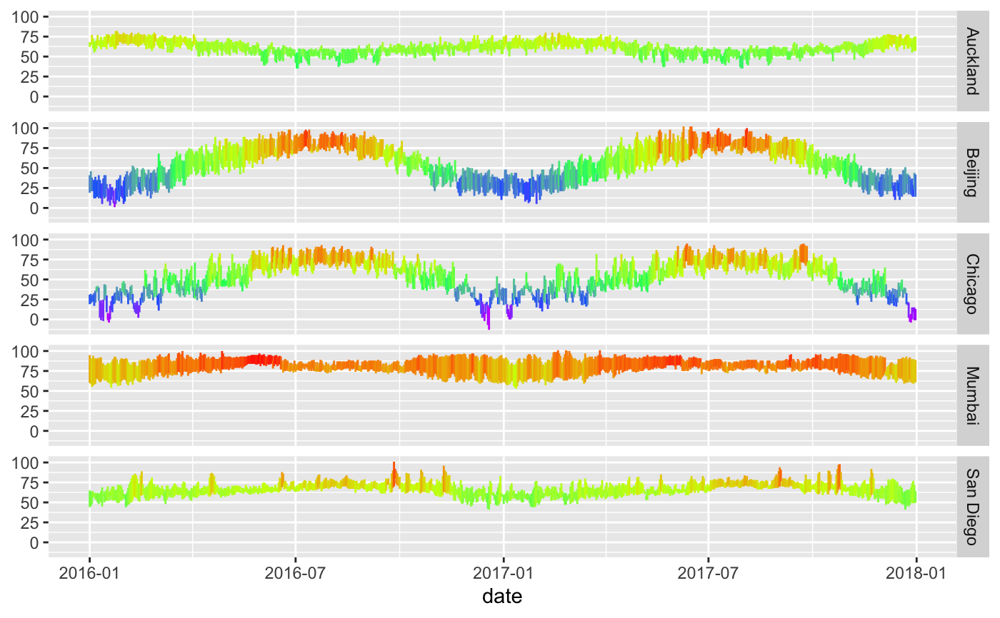

2016-17 weather in several cities
data(Weather)
A data frame with weather-related variables for several world cities.
City name.
Date.
Numeric year.
Numeric month.
Numeric day.
High, average, and low temperature for the day in degrees F.
High, average, and low dew point for the day in degrees F.
High, average, and low relative humidity.
High, average, and low sea level pressure in inches of mercury.
High, average, and low visability for the day in miles.
High, average, and low wind speed for the day in mph.
Precipitation for the day -- a character vale; T means "trace amount".
Character string naming weather events on the day (Rain, Fog, Snow, etc.)
These data were downloaded from WeatherUnderground in January 2018.
if (require(dplyr)) { Weather %>% group_by(city, year) %>% summarise( min_temp = min(low_temp), max_temp = max(high_temp) ) }#>#> # A tibble: 10 x 4 #> # Groups: city [5] #> city year min_temp max_temp #> <chr> <dbl> <dbl> <dbl> #> 1 Auckland 2016 35 82 #> 2 Auckland 2017 35 80 #> 3 Beijing 2016 1 98 #> 4 Beijing 2017 5 102 #> 5 Chicago 2016 -13 93 #> 6 Chicago 2017 -4 95 #> 7 Mumbai 2016 54 100 #> 8 Mumbai 2017 53 101 #> 9 San Diego 2016 41 101 #> 10 San Diego 2017 41 98if (require(ggformula)) { Weather %>% gf_linerange(low_temp + high_temp ~ date | city ~ ., color = ~ (high_temp + low_temp) / 2, show.legend = FALSE) %>% gf_refine(scale_color_gradientn(colors = rev(rainbow(5)))) }